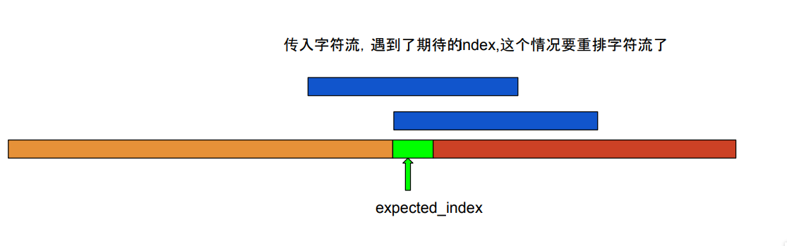
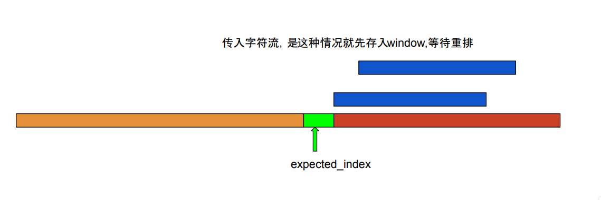

实现 stream reassembly
什么是 stream reassembly ？
stream reassembly 是一个字符流重组器 , 主要的功能是将传入的没一份打乱的字符流重新组合形成原来的有序的字符流。实现 stream reassembly
stream reassembly 被包装成一个类，也就是lab1要实现的StreamReassembler类 。
为了实现这个类的功能，我在类中添加了一下的一些变量和函数。
class StreamReassembler {
private:
size_t expected_index;
bool _eof_appear_sign;
size_t _eof_index ;
std::map<size_t,std::string> window;
void write_substring();
void insert_pair(const std::string &data,const size_t index)
............
}
- expected_index
- 表示小于expected_index前面的Bytes全部已经有序,期待的下一个Bytes的index等于expected_index
- _eof_appear_sign
_eof_apper_sign == true表示eof标志已经出现，因为字符流进来是乱序的,最后的一个字符流可能比前面的字符流先进入StreamReassembler,所以当eof传入的时候我们要记录下eof已经出现
- _eof_index
- _eof_index 用来记录出现eof的字符流的最后一个bytes的index , 当
_eof_apper_sign == true && expected_index >= _eof_index的时候，设置字符流已经完成重组。
- _eof_index 用来记录出现eof的字符流的最后一个bytes的index , 当
- std::map
window[index] = string, 用map来存储传进来的字符流 , 其中index表示传入字符流的第一个bytes的index, string表示传入字符流中存储的字符。
- write_substring() && insert_pair(const std::string &data,const size_t index)
- insert_pair 用来插入{index,string}映射对到window中， write_substring()用来重新排列window存储的乱序的字符流。
实现 push_substring(data,index,eof);
直接上代码:
void StreamReassembler::push_substring(const string &data, const size_t index, const bool eof) {
if(eof){ /*如果遇到eof，更新_eof_appear_sign和_eof_index*/
_eof_appear_sign = true;
_eof_index = index + data.length();
}
/*
如果传入的字符流第一个Byte的index小于等于expected_index同时最后一个Byte的index大于等于expected_index,
表示期待的字符流来了这个时候要进行字符流的重排操作, 如下图一所示;
*/
if(index<=expected_index && data.length()+index>=expected_index){
insert_pair(data,index); //先将最新的字符流插入到window中
write_substring(); //重排
}
/*如果传入的字符流第一个Byte的index大于expected_index,这个时候不着急重排，先将其插入window中，等待重排,如下图二所示; */
else if(index>expected_index){
insert_pair(data,index);
}
}
void StreamReassembler::insert_pair(const string &data,const size_t index){
size_t data_len = data.length();
if(window[index].length()<data_len){
window[index] = data;
}
}
void StreamReassembler::write_substring(){
auto it = window.begin();
for(;it!=window.end();it++){
size_t data_len = it->second.length();
if(it->first<=expected_index){
if((data_len+it->first)<=expected_index){
continue;
}
size_t writed_len = it->first + data_len - expected_index;
/*这里_output.wirte()是lab0实现的函数,函数返回成功写入字符的数量*/
expected_index += _output.write(it->second.substr(expected_index-it->first,writed_len));
}
else break;
}
/*删除已经处理过的字符流*/
window.erase(window.begin(),it);
/*如果已经处理好最后一个流了就设置eof*/
if(_eof_appear_sign && _eof_index <= expected_index){
_output.end_input();
}
}
图1:

图2:

unassembled_bytes()和empty()的实现比较简单。
本博客所有文章除特别声明外，均采用 CC BY-SA 3.0协议 。转载请注明出处！